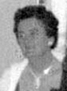

fiche familiale
*******************************************************************************
 |
Xavier Baudoin Beaudoin décède à l'âge de 68 ans. Naissance le 10 juillet 1869 à Ste-Cécile-de-Masham (La Pêche) Baptême le 11 juillet 1869 à Ste-Cécile-de-Masham (La Pêche) Baptisé Julien-Isaïe-François-Xavier-Ovide Baudoin. Parrain Julien Baudoin, marraine Magdeleine Racine. Occupation: Cultivateur. Héritier de la terre paternelle du rang St-Luc, aujourd'hui Chemin de la Prairie. Décès en 1938 à Ste-Cécile-de-Masham (La Pêche) Inscrit sous "Exavier" sur son monument funéraire. Père: François-Xavier Baudoin Mère: Marie-Clothilde Brazeau (sa famille) Mariage le 28 avril 1891 à Ste-Cécile-de-Masham (La Pêche) François-Xavier au registre des actes de mariage. Âge de l'époux 21 ans, âge de l'épouse 16 ans. Épouse: Hedwige Martineau décède à l'âge de 44 ans. Naissance le 31 jul 1874 Décès le 14 oct 1918 à Ste-Cécile-de-Masham (La Pêche) Inscrite sous "Marie-Louise" sur son monument funéraire. Père: Médard Martineau Mère: Caroline Martin (sa famille) |
| |
Enfant 1 Clothilde Beaudoin décède à l'âge de 83 ans. Naissance 22 sep 1894 à Ste-Cécile-de-Masham (La Pêche) Décès 18 fév 1978 à Ste-Cécile-de-Masham (La Pêche) Mariage le 7 janvier 1914 à Ste-Cécile-de-Masham (La Pêche) Conjoint: Damasse-Thomas Martineau n. 17 juin 1867 à Ste-Cécile-de-Masham (La Pêche) b. 13 juillet 1867 à Ste-Cécile-de-Masham (La Pêche) d. en 1949 à Ste-Cécile-de-Masham (La Pêche) Père: Damasse Martineau Mère: Marie-Rose-Délima Lamothe Enfant 1 Marguerite Martineau n. 22 février 1914 à Ste-Cécile-de-Masham (La Pêche) d. 17 février 2010 à Alfred, cté Prescott, ON Enfant 2 Marcel Martineau n. en 1918 à Ste-Cécile-de-Masham (La Pêche) d. en 1988 à Ste-Cécile-de-Masham (La Pêche) Conjointe: Thérèse Gervais Enfant 3 Hélène Martineau n. à Ste-Cécile-de-Masham (La Pêche) d. avant 2010 - - - - - - - - - - - - - - - - - - - - - - - - - - - - - - - - Mariage le 25 oct 1952 à Cathédrale d'Ottawa Conjoint: Jean-Baptiste Meunier n. 5 sep 1894 Père: Alexis Meunier Mère: Philomène Breton |
Enfant 2 Régina Beaudoin
décède à l'âge de 33 ans.
Naissance 21 août 1896 à Ste-Cécile-de-Masham (La Pêche)
Décès 27 juin 1930
Mariage le 24 jul 1916 à Ste-Cécile-de-Masham (La Pêche)
Conjoint: Cléophas Breton
Père: Moïse Breton
Mère: Marie Guévremont
Enfant 1 Clarisse Breton
Conjoint: Aldoria Coderre
-------------------------------------------------------------------------------
| |
Enfant 3 Salomon Beaudoin décède à l'âge de 69 ans. Naissance 17 jan 1899 à Ste-Cécile-de-Masham (La Pêche) Décès 27 juin 1968 à Ste-Cécile-de-Masham (La Pêche) Mariage le 30 déc 1926 à Ste-Cécile-de-Masham (La Pêche) Conjointe: Rosanna Robert. n. en 1902 d. 3 mai 1981 à Ste-Cécile-de-Masham (La Pêche) Père: Victor Robert Mère: Marie Philippe Enfant 1 Hortence-Rita-Rhéa Beaudoin Mariage le 6 jul 1949 à Ste-Cécile-de-Masham (La Pêche) Conjoint: Noël-Philias Labelle Enfant 2 Marie-Bertha-Léonie Beaudoin Mariage le 22 août 1951 à Ste-Cécile-de-Masham (La Pêche) Conjoint: Joseph-Albert-Léo Charron Enfant 3 Aldéa-Reina-Marie Beaudoin Mariage le 22 août 1951 à Ste-Cécile-de-Masham (La Pêche) Conjoint: Adrien-Joseph-Dominique Danis |
Enfant 4 Valéda Beaudoin
décède à l'âge de 4 mois
Naissance le 7 fév 1900 à Ste-Cécile-de-Masham (La Pêche)
Décès en mai 1900 à Ste-Cécile-de-Masham (La Pêche)
-------------------------------------------------------------------------------
Enfant 5 Analda-Cécile Beaudoin
décède à l'âge de 5 mois
Naissance le 28 déc 1901 à Ste-Cécile-de-Masham (La Pêche)
Décès en mai 1902 à Ste-Cécile-de-Masham (La Pêche)
-------------------------------------------------------------------------------
Enfant 6 Absolon Beaudoin
décède à l'âge de 15 ans
Naissance le 23 jan 1903 à Ste-Cécile-de-Masham (La Pêche)
Décès le 7 oct 1918 à Ste-Cécile-de-Masham (La Pêche)
Décède de la grippe espagnole.
-------------------------------------------------------------------------------
| |
Enfant 7 Reina Beaudoin décède à l'âge de 92 ans. Naissance 17 août 1904 à Ste-Cécile-de-Masham (La Pêche) Décès 5 sep 1996 à Ste-Cécile-de-Masham (La Pêche) Mariage le 11 mai 1926 à Ste-Cécile-de-Masham (La Pêche) Conjoint: Georges Jr. Beaudoin n. 28 oct 1895 à Ste-Cécile-de-Masham (La Pêche) d. le 28 avril 1959 à Ste-Cécile-de-Masham (La Pêche) Père: Georges Baudoin Beaudoin Mère: Henriette Dauth Enfant 1 Thérèse Beaudoin Conjoint: Léo Coderre Enfant 2 Annette Beaudoin Conjoint: Gérard Lemieux Mariage le 22 août 1964 à Saint-François-D'assisi de La Pêche Conjoint: Gérard Bernier Enfant 3 Yvette Beaudoin d. 29 jan 1985 Conjoint: Ronald Périard Enfant 4 Rita Beaudoin Mariage le 6 jul 1957 à Ste-Cécile-de-Masham (La Pêche) Conjoint: Roland Brazeau Enfant 5 Ida Beaudoin Conjoint: Jacques Charron Enfant 6 Aline Beaudoin Conjoint: Jean-Paul Parent Enfant 7 Nicole Beaudoin Conjoint: Jean-Marie Charron Enfant 8 Jacques Beaudoin n. en 1934, d. 19 jul 2008 à Gatineau Funérailles 28 jul 2008 à Ste-Cécile-de-Masham (La Pêche) Mariage le 24 août 1957 à Saint-François-D'assisi de La Pêche Conjointe: Annette Bernier Enfant 9 Aldège Beaudoin Conjointe: Hélène Hupé |
|  |
Enfant 8 Léo-Paul Beaudoin n. 11jul 1906, d. 27 fév 1974 Mariage le 21 décembre 1926 à Chelsea. Conjointe: Marguerite-Irène Bélanger n. en 1909, d. 6 fév 1996 Père: Alphonse-Viomesnil Bélanger Mère: Marie-Adèle-Angéline Baudoin |
Enfant 9 Adélard Beaudoin
décède à l'âge de 1 mois
Naissance en jan 1908 à Ste-Cécile-de-Masham (La Pêche)
Décès en fév 1908 à Ste-Cécile-de-Masham (La Pêche)
-------------------------------------------------------------------------------
Enfant 10 Noël Beaudoin
décède à l'âge de 56 ans.
Naissance 25 déc 1909 à Ste-Cécile-de-Masham (La Pêche)
Décès 14 sept 1966
Mariage le 1 jul 1948 à Val Rita, Cochrane ON.
Conjointe: Irène Morin
Père: Ernest Morin
Mère: Éveline Maltais
-------------------------------------------------------------------------------
Enfant 11 Solange Beaudoin
décède à l'âge de 58 ans.
Naissance 23 sept 1912 à Ste-Cécile-de-Masham (La Pêche)
Décès 3 juin 1971
Mariage le 15 nov 1934 à Sacré-Coeur d'Ottawa
Conjoint: Damien Brazeau n. en 1910, d. 7 fév 1974
Père: Isaïe Brazeau
Mère: Edwidge-Yvonne Liard
-------------------------------------------------------------------------------
Enfant 12 Marie-Yvonne Beaudoin
Mariage le 19 oct 1935 à Notre-Dame-de-Grâce de Hull
Conjoint: Jean-Paul Lafontaine
Père: Jean-Baptiste Lafontaine
Mère: Élisa Meloche
-------------------------------------------------------------------------------
| Page des ancêtres |
Page précédente | Début de la page | Page d'accueil |